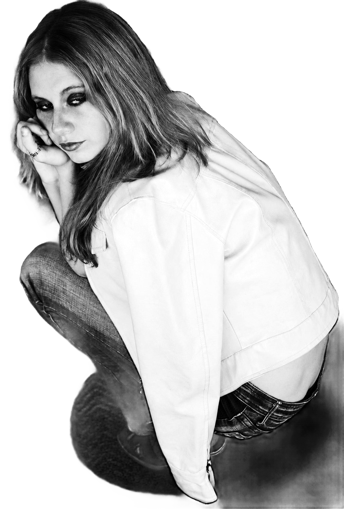
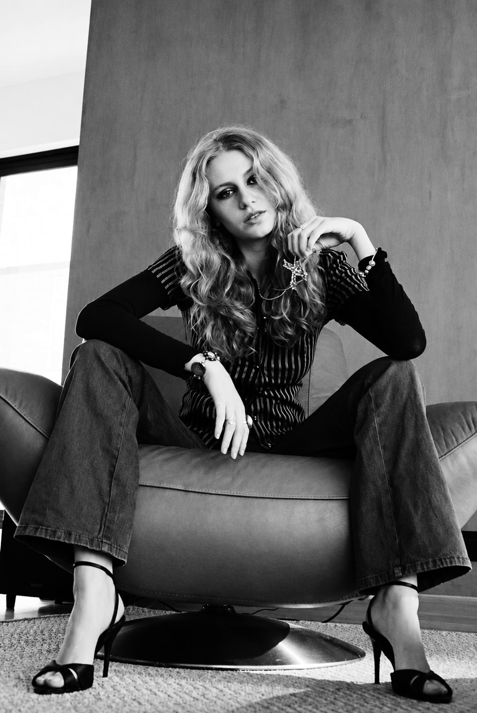
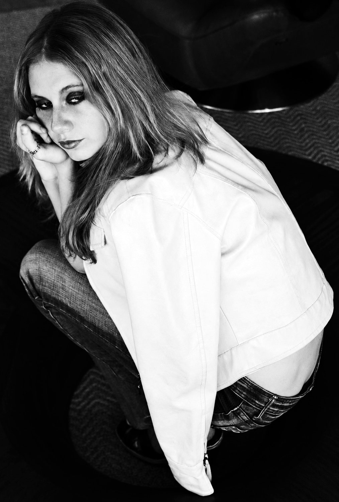
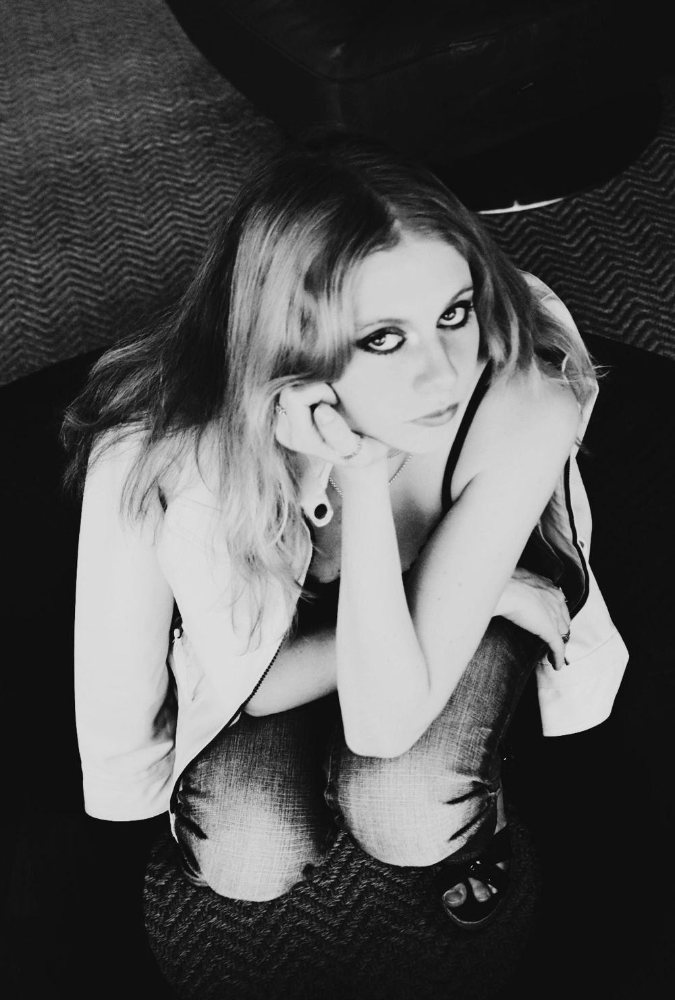
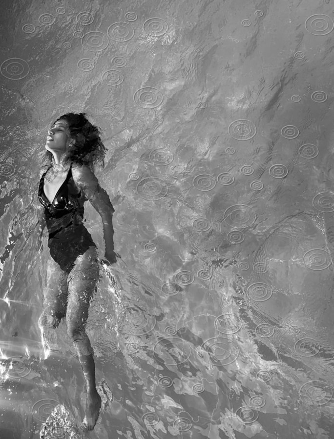
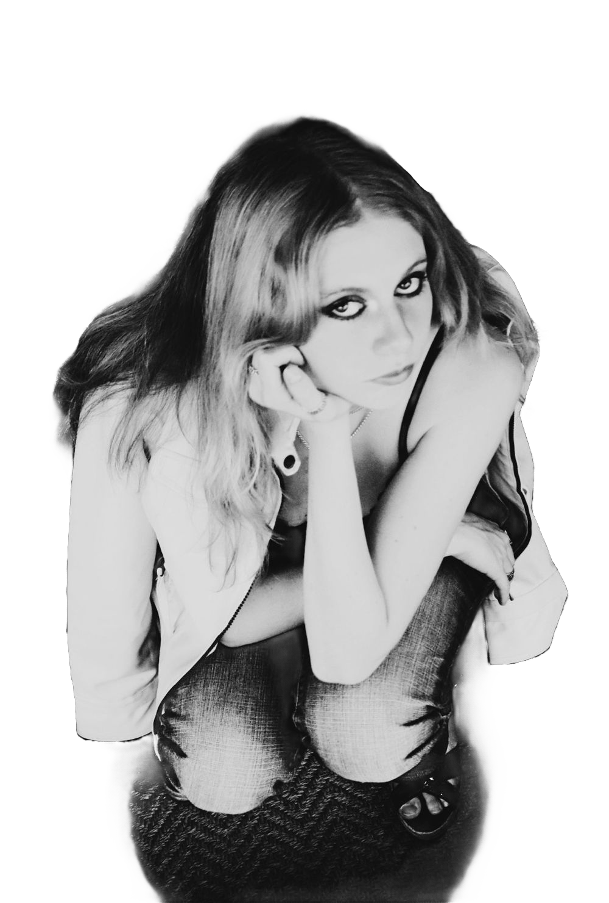

Low Light, campaña conceptual de moda
Fotografía, identidad y web
Diseño experiencias visuales.
Community manager y creadora de contenido visual. Fotografío, grabo, edito y diseño para marcas que quieren verse y conversar mejor.
Issue 01. Pasa las páginas con el scroll

LOW LIGHTISSUE 01. CONCEPT CAMPAIGNDenim after darkEn este número
Denim, cuero y horas tardías.

Primero los ojos.La identidad
LIGHT
LIGHT
Bodoni Moda y Jost. Negro, blanco y dos grises.

Late hoursLL
Una campaña de moda conceptual, contada como revista.
Fotografía, identidad, maquetación y web
Community manager
Una comunidad también se ilumina.
Planifico, fotografío, grabo, edito y mido. El contenido de tu marca sale de una sola mirada, con estrategia y datos detrás.
Antonia Bucheli
Community manager y creadora de contenido visual.
Barcelona (CET) · Remoto · Español nativo · Inglés
Puestos remotos de community manager, social media o contenido en empresas de tecnología, producto digital, diseño y moda. Freelance o tiempo completo.
Empresa de logística e implementación de automatización de procesos con IA.
- Planificación del calendario de contenidos y publicación en redes.
- Fotografía y video de procesos, producto y equipo.
- Edición de foto y de video corto en formato vertical.
- Contenido B2B que explica soluciones técnicas con IA de forma clara para clientes.
- Seguimiento de alcance, interacción y mensajes recibidos.
Campañas de moda, retrato, arquitectura y foto arte, con edición de foto y video.
Campaña conceptual de moda: concepto, fotografía, identidad, maquetación y web.
- Estrategia de contenidos
- Calendario editorial
- Pilares de contenido
- Tono de marca
- Análisis de audiencia y competencia
- Fotografía
- Video vertical: Reels, TikTok y Shorts
- Edición de foto
- Edición de video
- Copywriting
- Diseño de piezas para redes
- Identidad visual
- Moderación
- Respuesta a comentarios y mensajes
- Gestión de crisis
- Colaboraciones con creadores
- Alcance, interacción y conversión
- Informes mensuales
- Pruebas A/B
- Meta Ads, nivel básico
- Flujos de contenido con IA
- Uso transparente de la IA
- Automatizaciones con Zapier
- Contenido para buscadores con IA (AEO y GEO)
- Textos alternativos
- Subtítulos en video
- Diseño inclusivo
- Comunicación asíncrona
- Equipos en varias zonas horarias
- Autogestión
- Varias cuentas a la vez
- Video asíncrono con Loom
- Coordinación en Slack y Notion
- Pruebas de trabajo y entregas con plazo
- Meta Business Suite
- Buffer
- TikTok
- Google Analytics 4
- Metricool
- Canva
- CapCut
- Lightroom
- Photoshop
- Premiere Pro
- Framer
- Notion
- Slack
- Loom
- Zapier
- Gemini
- ChatGPT
- Claude
Ensayo fotográfico inédito, preparado para la revista Dearq de la Universidad de los Andes.
Me dañaste la nocheObra literaria inédita, en trámite de registro (2026).
Mi estrategia, en un esquema de luces
Entrego
Toca una publicación
- Pilar
- Formato
- Para qué
- Cómo lo mido
Esta página también se puede leer así
Como una campaña
Si tienes un lanzamiento: estrategia, imagen y publicación con principio y fin.
Como una temporada
Si tu marca necesita presencia constante: contenido propio y conversación cada mes.
Como una hoja de vida
Si buscas a alguien para tu equipo: freelance o a tiempo completo, en Barcelona o en remoto.
Fotografía
Empieza con una imagen.
Dirijo y hago la foto de campaña: la luz, la pose y la actitud.
Branding
Se vuelve una marca.
De esa imagen salen el logo, el color, la tipografía y las etiquetas.
Páginas web
Y la marca se vuelve sitio.
Diseño la web con la misma luz y la misma voz que la campaña.
Laboratorio con IA
Toca el agua.
Parto de mis fotos y uso IA para crear imágenes y piezas que responden a quien las mira.

Mi fotografía
Foto arquitectura y foto arte. Entra caminando.
Habitar el vacío: dos edificios culturales en Bogotá, mayo de 2025. Esta serie no usa IA.
Esquina
Lo que hago
Elige por dónde entra la luz.
Cada proceso funciona solo o conectado con los demás. Elige uno y mira qué pasa dentro.

Hagamos algo con filo.
Cuéntame qué marca, campaña o equipo necesita esta mirada.
antoniaguarin7@gmail.com
Antonia Bucheli. Barcelona y remoto.